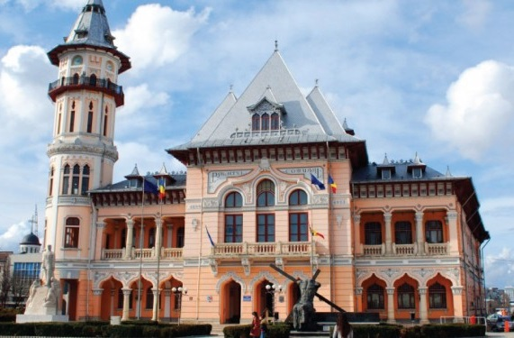

Istoric
1. Care a fost ideea?
La inceputul anului 2019 s-a constatat in piata buzoiana o cerere foarte mare de servicii IT atat pentru utilizatorii obisnuiti cat si pentru firmele care voiau sa-si automatizeze procesele.
Existau mai multi competitori pe piata in oras dar niciunul nu avea un serviciu complet in care de exemplu poti sa aduci elemente de microelectronica sau mentenanta web sau baze de date, la un pret foarte mic.
Impreuna cu un prieten vazand aceasta oportunitate am decis sa lansam aceasta firma undeva la finalele anului 2019.
Practic firma si-a deschis usile oficial in ianuarie 2020 unde incepeam sa primim deja clienti si sa le oferim solutii la probleme.
2. Istoria buzaului
Istoria scrisa a orasului Buzau incepe odata cu cea a Tarii Romanesti, statutul sau de targ si punct de vama fiind certificat de un document din timpul voievodului Dan al II-lea. Descoperirile arheologice din culturile Gumelnita si Monteoru arata prezenta omului in regiune inaintea erei creștine.
Un document din anul 376 mentioneaza un rau cu numele Mousaios, aceasta fiind cea mai veche atestare a numelui orasului, nume pe care l-a primit de la acest rau, pe al carui mal se afla. In secolul IV, gotii, care ocupau si spatiul buzoian, sunt alungati de aici de huni.
In perioada medievala a existat si o cetate a Buzaului, despre care s-au pastrat doar cateva mentiuni in documente straine, iar targul, mentionat ca fiind deja existent la 1431, a devenit si sediu episcopal ortodox in secolul al XVI-lea.
